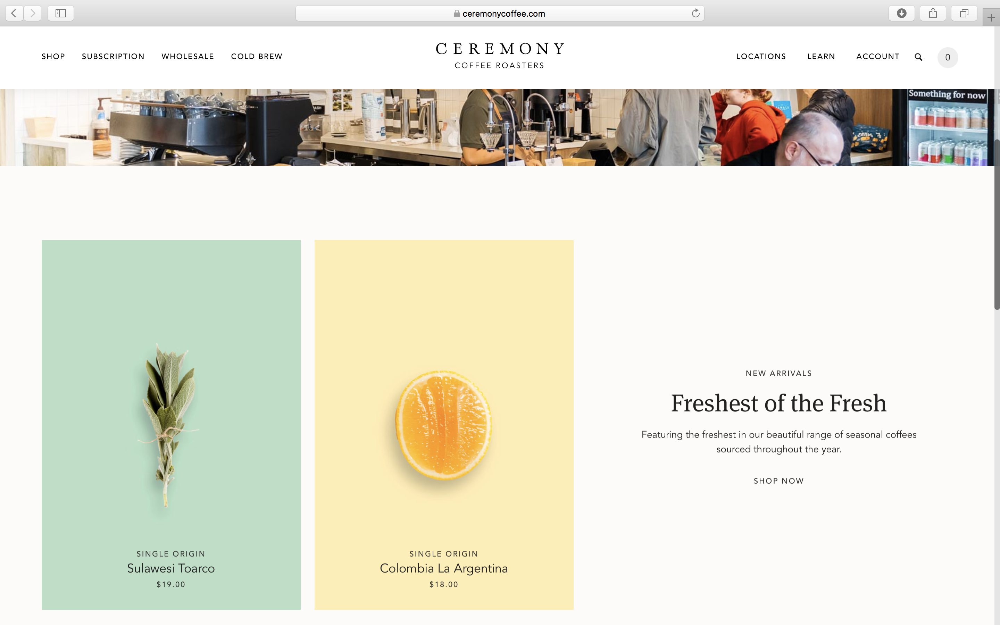
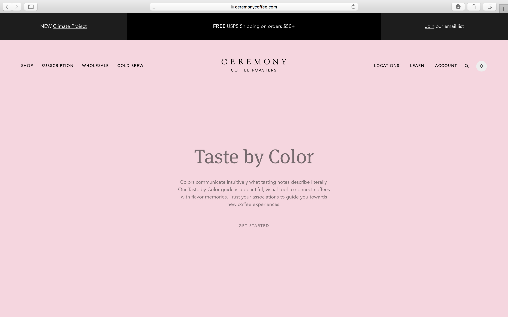
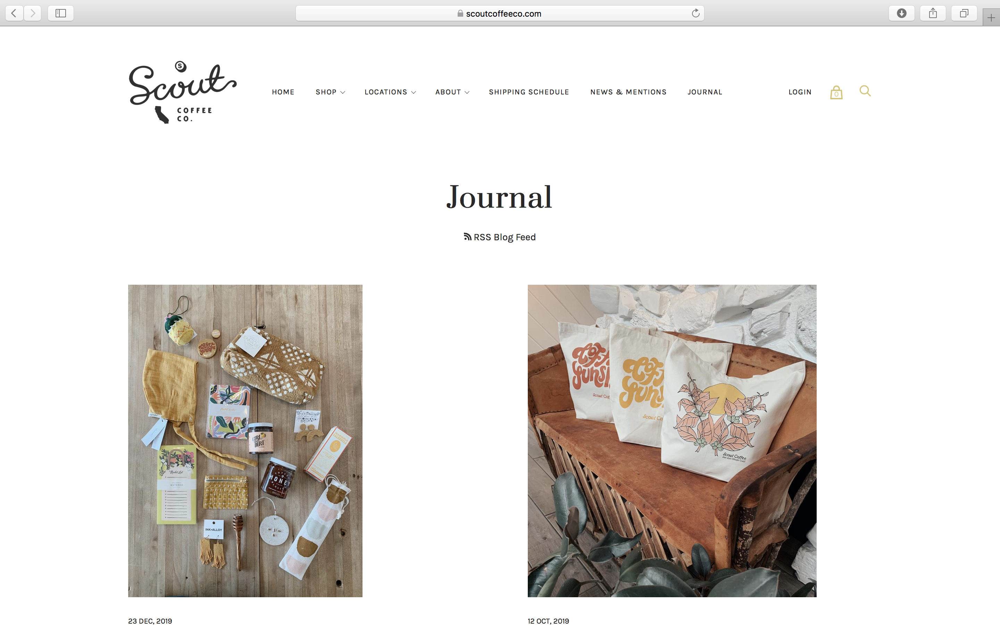
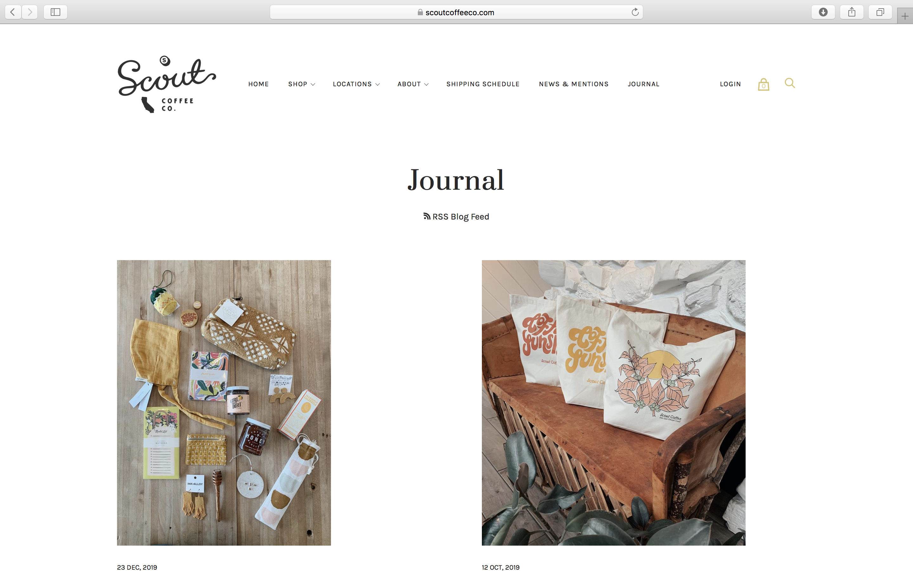

Final project proposal
Introduction
Identity Coffee
Identity Coffee is based in San Luis Obispo and owned by a local couple who bonded over their love of coffee. Share their love in a cozy place, with friendly people, specialty coffee, and freshly baked treats.
Target audience
The target audience is hard working people in their 20s-40s who need a break from their busy lives. Identity Coffee is an oasis and place of inspiration. The audience is looking for quality coffee and a place to relax.
These customers have the ability to search the website for the menu, history of the shop, and information about roasting.
Comparative analysis
Ceremony Coffee
 Temple Coffee Roasters


Scout Coffee
 

Website content
Menu
We offer a full coffee bar and are always interested in creating something new. From cold brew to a latte, we can make it for you.
[Image of cup of coffee with coffee art.]
About
We are located on Higuera Street in downtown San Luis Obispo.
[Image of inside of coffee shop.]
Roasting
We roast our beans in house to curate our own unique taste.
[Image of ingredients.]